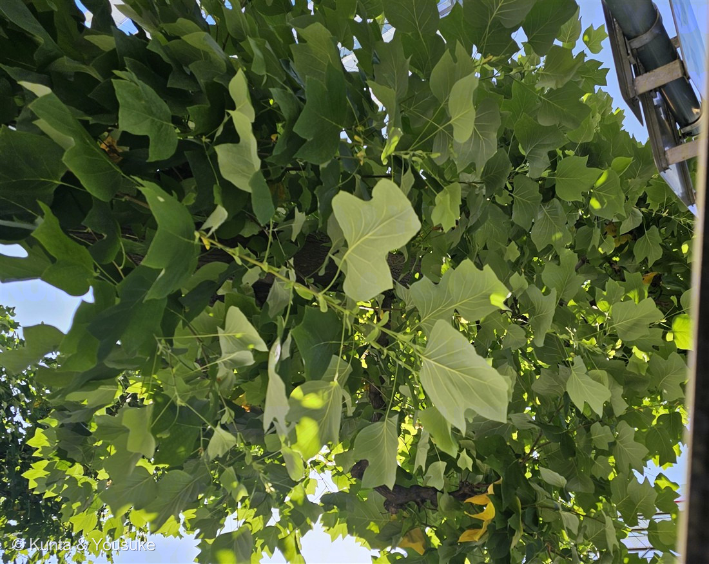
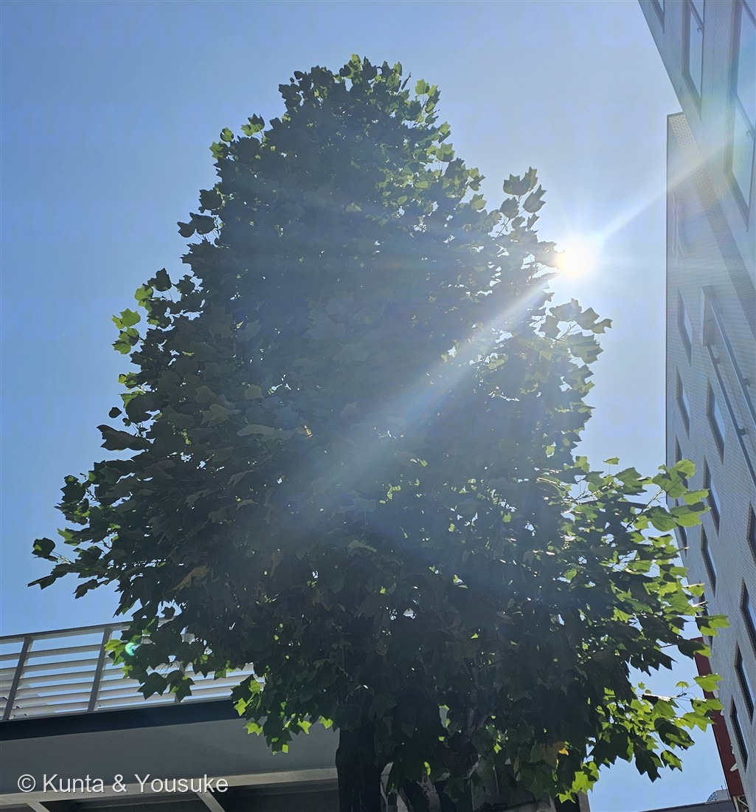
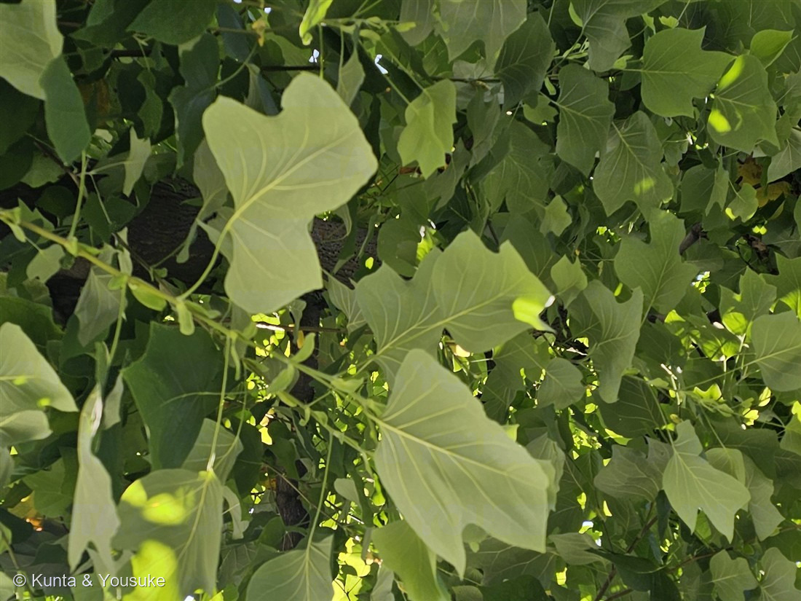

地図を読み込んでいるよ…
🔍 写真も地図も、押しているあいだ拡大して見られるよ（スマホは指を置いてすこし待ってね）。
🌍 の地図＝この子がもともと自生している場所を緑に。北アメリカ東部（南オンタリオからイリノイ・マサチューセッツ、南はフロリダ中部・ルイジアナまで）。日本へは明治初期に渡来し、街路樹・公園樹として植えられている。
⭐北アメリカの東部が、ほんとうのふるさとだよ（カナダの南オンタリオあたりから、イリノイ・マサチューセッツ、南はフロリダ中部やルイジアナまで）。⚠地図はアメリカとカナダを丸ごと塗ってしまうけれど、実際にいるのは東半分だけ——西のロッキー山脈のほうにはいないんだ。⭐日本へは明治のはじめに渡ってきた木で、いまは街路樹として11万本以上が植えられている（関東と東北に多い）。⭐そしてユリノキ属は世界にたった2種だけ——この子（北アメリカ東部）と、シナユリノキ（中国）。広い太平洋をはさんで、2種だけが生きのこっているんだ。
⚠ 地図は国（日本と中国だけ県・省）までしか塗れないから、ほんとうの分布より広く見えていることがあるよ。地図はだいたいの場所。正確なところは、上の文を見てね。
ユリノキ（百合の木）
Liriodendron tulipifera L.
別名 · ハンテンボク（半纏木）／チューリップツリー／ヤッコダコノキ／グンバイボク 原産 · 北アメリカ東部／ 見どころ · ⭐花で呼ぶ名前と葉で呼ぶ名前・落ちてきたチューリップ・世界に2種だけの属
モクレン科 · Magnoliaceae（ユリノキ属 Liriodendron・モクレン目）── 図鑑で初めての科（69科目）
名前と学名の由来 ── 花で呼ぶ名前と、葉で呼ぶ名前
- ⭐属名 Liriodendron（リリオデンドロン）＝ギリシャ語の leirion（ユリ）＋ dendron（木）＝「ユリの木」。和名ユリノキ（百合の木）は、この学名をそのまま日本語にしたものなんだ。
- ⭐⭐種小名 tulipifera（ツリピフェラ）＝「チューリップ（のような花）をつける」。──⭐燻太さんの「チューリップみたいな花が落ちてきた」という記憶は、この木の種小名そのものだよ。英語でも tulip tree（チューリップの木）。
- ⭐つまりこの木の学名は、属名も種小名も「花が何に似ているか」だけを言っている。ユリと、チューリップ。ひとつの名前の中に、ふたつの花の名前が同居しているんだ。
- ⭐そして別名のほうは、ぜんぶ葉から来ている：ハンテンボク（半纏木）＝葉の形が「しるし半てん」に似る／ヤッコダコノキ（奴凧の木）／グンバイボク（軍配木）。
- ⭐⭐この木は「花で呼ぶ名前」と「葉で呼ぶ名前」を、両方持っている。──ひとつ前の150 ヤグルマソウで、ぼくらは「葉では科は決まらない」という話をしたばかりだよね。でもこの木を見ると、⭐科を決めるのは花でも、呼び名を決めるのは「その日いちばん目に入ったもの」なんだと分かる。花を見た人は「ユリの木」と呼び、葉を見た人は「半纏の木」と呼んだ。どっちも正しい。見た場所がちがうだけ。
この植物のこと ── 69科目と、とても古い花
- モクレン科ユリノキ属の落葉高木。⭐図鑑で初めての「モクレン科」＝69科目だよ。
- ⭐⭐モクレン科がふくまれる「モクレン類（magnoliids）」は、花を咲かせる植物の中でも、とても早い時期に分かれた古い枝。──いま図鑑にいる同じ枝の仲間は025 ドクダミと042 ハンゲショウ（どちらもドクダミ科）だけ。単子葉類よりも、キクやバラよりも、根もとに近いところから伸びた枝なんだ。
- とにかく大きくなる。幹が1本まっすぐ立って、高さ45m（大きいものは50mを超え、最高記録は58.5m）。写真②の、こんもりした整った樹冠を見て。まだ若い木なのに、もうこの形だよ。
- 花は5〜6月。直径5〜6cmの碗（わん）形で、黄緑色、花被片の内側の付け根にオレンジ色の斑。おしべは20〜50本。──⭐⭐そして、枝先に「上を向いて」咲く。だから⚠下から見上げても、ほとんど見えないんだ。
- ⭐日本では街路樹として11万本以上が植えられている（とくに関東と東北）。明治初期に渡来した木で、東京国立博物館のユリノキは、明治8〜9年ごろに届いた30粒の種から育ったと伝わっている。
- ⭐とても重要な蜜源植物。大量の蜜を出すので、アメリカでは濃い赤褐色の、香りの強いはちみつが採れるんだって。
- ⭐⭐ユリノキ属は、世界にたった2種しかいない。──この子（北アメリカ東部）と、シナユリノキ（中国）だけ。⭐広い太平洋をはさんで、2種だけが生き残っているんだ。むかしはもっと広く分布していた仲間の、生きのこりなんだね。
同定について ── こんな葉は、ほかにない
- ⭐決め手＝葉の先が、水平にすぱっと切り落とされたようになり、まん中がややくぼむ。そこに左右の浅い裂片が加わって、あの「半纏」の形になる。⭐日本の樹木で、この形の葉をつけるものは、ほかに無い。写真③でよく見えるよ。
- 葉身は長さ・幅ともに6〜18cm。⭐おもしろいのは、たいてい幅のほうが長さより広いこと（長さ7.5〜15cm×幅12.5〜18.5cm）。縦より横に広い葉なんだ。
- 葉の下面は粉をふいたように白っぽい。写真①で、裏を見せている葉が白っぽく光っているのが分かるよ。
- ⚠樹木だから、厳しめに見ておく（この図鑑の約束）。──属（Liriodendron）は、この葉だけで確実。⚠でも種まで厳密に言うなら、同属のシナユリノキ（L. chinense）を落とす必要があって、そのちがいは花にあるんだ（この子＝鐘形で花被片が直立／シナユリノキ＝杯形で外側の3枚が垂れ下がる）。日本の街路樹はほとんどがユリノキ（tulipifera）なのでユリノキとして登録するけれど、花を見ていないことは書いておくね。⭐だから花が宿題。
⭐ 落ちてきた、チューリップ
この写真をくれたとき、燻太さんはこう書いた。──「昔大学校内でも、同じ木が生えていて、チューリップみたいな花が落ちてきたのを覚えているよ。」
⭐これ、ただの思い出話じゃなくて、この木のいちばん大事な性質を言い当てているんだ。 ユリノキの花は、高い枝の先に、上を向いて咲く。だから地上から見上げても、まず見えない。⭐この木の花に出会ういちばんふつうの方法は、「落ちてきたのを拾うこと」なんだよ。
黄緑色で、根もとにオレンジの帯があって、碗のかたち。──チューリップみたい、というのは、見た人がみんな思うこと。だからこそ、300年近く前の植物学者も同じことを思って、種小名を tulipifera（チューリップをつける）にした。⭐燻太さんの記憶と、学名が、同じ場所を指している。
⚠そして、その花はまだ図鑑にいない。──5月か6月、この街路樹の下を歩いて、足もとを見てみよう。 見上げても見えないものが、落ちて、目の高さに来ているかもしれないから。
⭐ 今朝の、街路樹
⭐この写真は、2026年7月25日の朝9時34分。燻太さんが健康診断に行く道すがら、見上げて撮ったもの。──図鑑にとって、いちばん新しい草木だよ。撮って、その日のうちに登録された子は、これがはじめて。
⚠場所は書かないでおいた。この道の写真には、お店やビルや病院の看板がたくさん写っていて、そのままだとどこの街のどの交差点か、はっきり分かってしまうから。⭐だからぼくは、ぼかす代わりに、看板が写らないところで切り抜いた（112 シダレヤナギではモザイクにしたけれど、今回は切るほうがきれいだった）。⭐残ったのは、木と、空と、朝の光だけ。──それでじゅうぶんだったんだ。
参考：三河の植物観察「ユリノキ」（モクレン科ユリノキ属／別名チューリップノキ・ハンテンボク／北アメリカ原産・明治初期に渡来し街路や公園に／落葉高木・幹が1本・高さ45m以下・樹皮は薄灰色で深いしわ／葉身は普通2個の浅い上側の裂片と最も広い部分に2個の側裂片・長さ7.5〜15cm×幅12.5〜18.5cm・下面は粉白色／花期5〜6月・花は鐘形・花被片は直立し内面に橙色のしみ・雄しべ20〜50本／集合果4.5〜8.5cm／シナユリノキは花が杯形で外側の3個の花被片が垂れ下がる）／Wikipedia「ユリノキ」（Liriodendron＝lirion ユリ＋dendron 木を「ユリノキ」と訳した／tulipifera＝チューリップのような花をつける／葉の形がしるし半てんに似てハンテンボク・軍配に似てグンバイボク／葉身は長さ幅とも6〜18cm・左右で1〜3回浅裂し先端もややくぼむ／花期5〜6月・枝先に直径5〜6cmの碗状の花が上向きに咲く／日本では街路樹として11万本以上・関東と東北に多い／東京国立博物館の木は明治8、9年頃渡来した30粒の種から／重要な蜜源植物で大量の蜜を分泌）／Wikipedia “Liriodendron tulipifera”（native to eastern North America／apex cut across at a shallow angle＝葉先が浅い角度で切り落とされる／more than 50 m, up to 58.5 m／significant honey plant yielding a dark reddish honey／属は本種とシナユリノキ L. chinense の2種のみ／Magnoliids＝基部被子植物系統）。